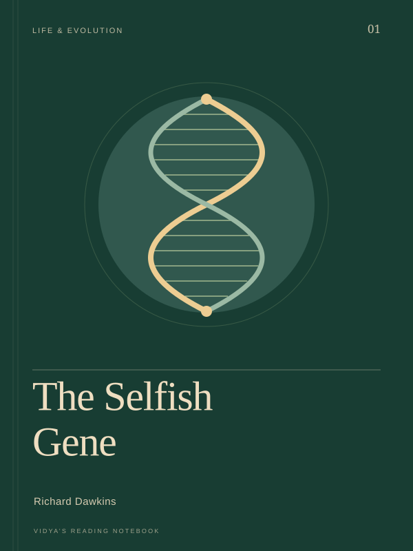

Life & evolution
The Selfish Gene
Dawkins explains natural selection from the perspective of genes that persist across generations. The book examines competition, cooperation, and apparently selfless behavior through that lens, asking how such patterns can evolve. Its central question is what helps a gene spread, with behavior considered through evolutionary explanations rather than judgments about how people ought to live.
- Natural selection
- Cooperation
- Genes
A question to carry with you
About this book ↗How does changing the level of explanation change the way we understand cooperation?